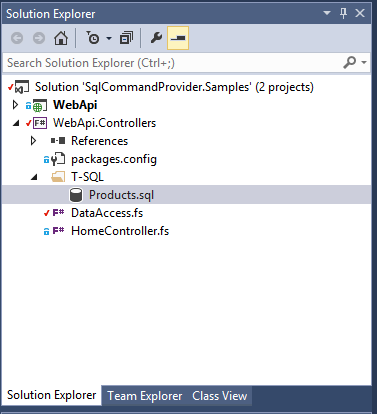
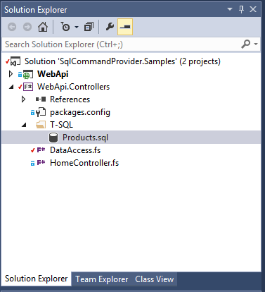
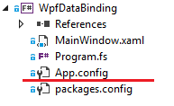
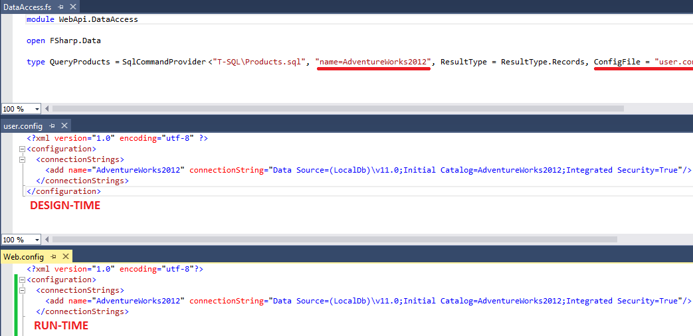

Configuration and Input
Provider parameters
| Name | Default | Accepted values |
| CommandText | - | T-SQL script or *.sql file |
| ConnectionStringOrName | - | Connection string or name |
| CommandType | CommandType.Text | Text or StoredProcedure |
| ResultType | ResultType.Tuples | Tuples, Records, DataTable or Maps |
| SingleRow | false | true/false |
| ConfigFile | app.config or web.config | valid file name |
| AllParametersOptional | false | true/false |
CommandText
T-SQL script
1: 2: 3: 4: 5: 6: 7: 8: 9: 10: 11: 12: 13: 14: 15: 16: 17: 18: 19: 20: 21: 22: 23: 24: 25: 26: 27: 28: 29: 30: 31: 32: 33: 34: 35: |
open FSharp.Data.Experimental [<Literal>] let connectionString = @"Data Source=(LocalDb)\v11.0;Initial Catalog=AdventureWorks2012;Integrated Security=True" //Inline T-SQL text convinient for short queries type GetDate = SqlCommand<"SELECT GETDATE() AS Now", connectionString> //More complex queries are better off extracted to stand-alone literals //Fibonacci! Not again! :) [<Literal>] let fibonacci = " WITH Fibonacci ([N-1], N) AS ( --seed SELECT CAST(0 AS BIGINT), CAST(1 AS BIGINT) UNION ALL --fold SELECT N, [N-1] + N FROM Fibonacci ) SELECT TOP(@Top) [N-1] FROM Fibonacci " type FibonacciQuery = SqlCommand<fibonacci, connectionString> FibonacciQuery() .Execute(10L) |> Seq.map Option.get |> Seq.toArray |> printfn "First 10 fibonacci numbers: %A" |
External *.sql file
An ability to use external *.sql file instead of inline strings can improve developement expirience. Visual Studio has rich tooling support for *.sql files. (via SQL Server Data Tools)
 

It offers following benefits:
- Intellisense in both F# and T-SQL code (it cannot get better)
- T-SQL syntax highlighting and verification
- Testing: query execution gives immediate feedback (small trick required - see the picture above)
- Clean separation between T-SQL and F# code
Having all data access layer logic in bunch of files in one location has clear advantage. For example, it can be handed over to DBA team for optimization. It's harder to do when application and data access are mixed together (LINQ).
1: 2: 3: |
type CommandFromFile = SqlCommand<"GetDate.sql", connectionString> let cmd = CommandFromFile() cmd.Execute() |> ignore |
Extracting T-SQL into external files is not the only way to scale application development. The other alternative is to push logic into programmable objects. I strongly recommend T-SQL functions because they have typical benefits of functional-first programming style: composition (therefore reuse), restricted side-effects and simple substitution model (easy to reason about). Stored procedures can be used too but they resemble imperative programming with all the drawbacks attached.
Below is an example of SQL Table-Valued Function usage.
1:
|
type GetContactInformation = SqlCommand<"SELECT * FROM dbo.ufnGetContactInformation(@PersonId)", connectionString> |
Syntax erros
In case of syntax errors in T-SQL the type provider shows fairly clear error message. An instantaneous feedback is one of the most handy features of SqlCommandProvider.
Limitation: a single parameter in a query may only be used once.
For example, an attempt to use following query will fail:
WHEN @x % 3 = 0 AND @x % 5 = 0 THEN 'FizzBuzz'
WHEN @x % 3 = 0 THEN 'Fizz'
WHEN @x % 5 = 0 THEN 'Buzz'
ELSE CAST(@x AS NVARCHAR)
You can work around this by declaring a local intermediate variable in t-sql script and assigning a paramater in question to that variable.
1: 2: 3: 4: 5: 6: 7: 8: 9: 10: 11: 12: 13: |
type FizzOrBuzz = SqlCommand<"
DECLARE @x AS INT = @xVal
SELECT
CASE
WHEN @x % 3 = 0 AND @x % 5 = 0 THEN 'FizzBuzz'
WHEN @x % 3 = 0 THEN 'Fizz'
WHEN @x % 5 = 0 THEN 'Buzz'
ELSE CONCAT(@x, '') --use concat to avoid nullable column
END", connectionString>
let fizzOrBuzz = FizzOrBuzz()
printfn "Answer on interview:\n%A" [ for i = 1 to 100 do yield! fizzOrBuzz.Execute(i) ]
|
ConnectionStringOrName
Inline or literal
Connection string can be provided either via literal (all examples above) or inline
1: 2: |
//Inline type Get42 = SqlCommand<"SELECT 42", @"Data Source=(LocalDb)\v11.0;Initial Catalog=AdventureWorks2012;Integrated Security=True"> |
The literal version is more practical because connection string definition can be shared between different declarations of SqlCommand<...>.
By name
The other option is to supply connection string name from config file.
1: 2: 3: 4: 5: |
//default config file name is app.config or web.config type Get43 = SqlCommand<"SELECT 43", "name=AdventureWorks2012"> //specify ANY other file name (including web.config) explicitly type Get44 = SqlCommand<"SELECT 44", "name=AdventureWorks2012", ConfigFile = "user.config"> |
I would like to emphasize that ConfigFile is about design time only.
Let me give you couple examples to clarify:
You build Windows Service or WPF application.  If it is a purely F# project and default app.config is there
ConfigFileparameter can be omitted. Still, in runtime the connection string with the same name should be available via .NET configuration infrastructure (ConfigurationManager). It means that either you have packaging/deployment system that knows how to fix connection string in config file to point to production database (for example, Slow Cheetah), or you do it manually after application is deployed.You have mixed ASP.NET WebAPI solution: C# hosting project and F# controllers implementation project.
 F# controllers project is a simple library project. It has data access layer module.
F# controllers project is a simple library project. It has data access layer module.
SqlCommand<...>definitions refer to connection string by name form user.config file.  It's completely legitimate not to check-in this user.config file into source control system if it's developer specific. Similar setup can be applied inside single project to separate user-specific configuration from common production config.
Overriding connection string at run-time
Run-time database connectivity configuration is rarely (almost never) the same as design-time.
All SqlCommand<_>-generated types can be re-configured at run-time via optional constructor parameter.
The parameter is optional because "config file + name" approach is an acceptable way to have run-time configuration different from design-time.
Several use cases are possible:
1: 2: 3: 4: 5: 6: 7: 8: 9: 10: 11: 12: 13: 14: 15: 16: 17: 18: 19: 20: 21: 22: 23: 24: 25: 26: 27: 28: 29: 30: 31: 32: 33: 34: 35: 36: 37: 38: 39: 40: 41: 42: 43: 44: 45: 46: |
//Case 1: pass run-time connection string into ctor let runTimeConnStr = "..." //somehow get connection string at run-time let get42 = Get42(runTimeConnStr) //Case 2: bunch of command types, single database //Factory or IOC of choice to avoid logic duplication. Use F# ctor static constraints. module DB = [<Literal>] let connStr = @"Data Source=(LocalDb)\v11.0;Initial Catalog=AdventureWorks2012;Integrated Security=True" type MyCmd1 = SqlCommand<"SELECT 42", connStr> type MyCmd2 = SqlCommand<"SELECT 42", connStr> let inline createCommand() : 'a = let connStr = "..." //somehow get connection string at run-time //invoke ctor (^a : (new : string -> ^a) connStr) let dbCmd1: DB.MyCmd1 = DB.createCommand() let dbCmd2: DB.MyCmd2 = DB.createCommand() //Case 3: multiple databases //It gets tricky because we need to distinguish between command types associated with different databases. //Static type property ConnectionStringOrName that has exactly same value as passed into SqlCommandProvider helps. module DataAccess = [<Literal>] let adventureWorks = @"Data Source=(LocalDb)\v11.0;Initial Catalog=AdventureWorks2012;Integrated Security=True" [<Literal>] let master = @"Data Source=(LocalDb)\v11.0;Initial Catalog=master;Integrated Security=True" type MyCmd1 = SqlCommand<"SELECT 42", adventureWorks> type MyCmd2 = SqlCommand<"SELECT 42", master> let inline createCommand() : 'a = let designTimeConnectionString = (^a : (static member get_ConnectionStringOrName : unit -> string) ()) let connStr = if designTimeConnectionString = adventureWorks then "..." //somehow get AdventureWorks connection string at run-time elif designTimeConnectionString = master then "..." //somehow get master connection string at run-time else failwith "Unexpected" //invoke ctor (^a : (new : string -> ^a) connStr) let adventureWorksCmd: DataAccess.MyCmd1 = DataAccess.createCommand() let masterCmd: DataAccess.MyCmd2 = DataAccess.createCommand() |
It is worth noting that because of "erased types" nature of this type provider reflection and other dynamic techniques cannot be used to create command instances.
Stored procedures
- Set
CommandTypeparameter toCommandType.StoredProcedureto specify it directly by name - Stored procedures' out parameters and return value are not supported
1: 2: 3: 4: 5: 6: 7: 8: 9: 10: 11: 12: 13: |
open System.Data type UpdateEmplInfoCommandSp = SqlCommand< "HumanResources.uspUpdateEmployeePersonalInfo", connectionString, CommandType = CommandType.StoredProcedure > let sp = new UpdateEmplInfoCommandSp() sp.AsyncExecute(BusinessEntityID = 2, NationalIDNumber = "245797967", BirthDate = System.DateTime(1965, 09, 01), MaritalStatus = "S", Gender = "F") |> Async.RunSynchronously |
Optional input parameters
By default all input parameters to AsyncExecute/Execute are mandatory.
But there are rare cases when you prefer to handle NULL input values inside T-SQL script.
AllParametersOptional set to true makes all parameters (guess what) optional.
1: 2: 3: 4: 5: 6: |
type IncrBy = SqlCommand<"SELECT @x + ISNULL(CAST(@y AS INT), 1) ", connectionString, AllParametersOptional = true, SingleRow = true> let incrBy = IncrBy() //pass both params passed incrBy.Execute(Some 10, Some 2) = Some 12 //true //omit second parameter. default to 1 incrBy.Execute(Some 10) = Some 11 //true |
Table-valued parameters (TVPs)
Sql command needs to call a stored procedure or user-defined function that takes a parameter of table-valued type.
Set up sample type and sproc:
CREATE TYPE myTableType AS TABLE (myId int not null, myName nvarchar(30) null)
GO
CREATE PROCEDURE myProc
@p1 myTableType readonly
AS
BEGIN
SELECT myName from @p1 p
END
1: 2: 3: 4: 5: |
type TableValuedSample = SqlCommand<"exec myProc @x", connectionString> type TVP = TableValuedSample.MyTableType let tvpSp = new TableValuedSample() //nullable columns mapped to optional ctor params tvpSp.Execute(x = [ TVP(myId = 1, myName = "monkey"); TVP(myId = 2) ]) |
type LiteralAttribute =
inherit Attribute
new : unit -> LiteralAttribute
Full name: Microsoft.FSharp.Core.LiteralAttribute
--------------------
new : unit -> LiteralAttribute
Full name: Configuration and Input.connectionString
Full name: Configuration and Input.GetDate
Full name: FSharp.Data.Experimental.SqlCommand
Full name: Configuration and Input.fibonacci
Full name: Configuration and Input.FibonacciQuery
from Microsoft.FSharp.Collections
Full name: Microsoft.FSharp.Collections.Seq.map
from Microsoft.FSharp.Core
Full name: Microsoft.FSharp.Core.Option.get
Full name: Microsoft.FSharp.Collections.Seq.toArray
Full name: Microsoft.FSharp.Core.ExtraTopLevelOperators.printfn
Full name: Configuration and Input.CommandFromFile
Full name: Configuration and Input.cmd
Full name: Microsoft.FSharp.Core.Operators.ignore
Full name: Configuration and Input.GetContactInformation
Full name: Configuration and Input.FizzOrBuzz
Full name: Configuration and Input.fizzOrBuzz
Full name: Configuration and Input.Get42
Full name: Configuration and Input.Get43
Full name: Configuration and Input.Get44
Full name: Configuration and Input.runTimeConnStr
Full name: Configuration and Input.get42
Full name: Configuration and Input.DB.connStr
Full name: Configuration and Input.DB.MyCmd1
Full name: Configuration and Input.DB.MyCmd2
Full name: Configuration and Input.DB.createCommand
val string : value:'T -> string
Full name: Microsoft.FSharp.Core.Operators.string
--------------------
type string = System.String
Full name: Microsoft.FSharp.Core.string
Full name: Configuration and Input.dbCmd1
from Configuration and Input
Full name: Configuration and Input.dbCmd2
Full name: Configuration and Input.DataAccess.adventureWorks
Full name: Configuration and Input.DataAccess.master
Full name: Configuration and Input.DataAccess.MyCmd1
Full name: Configuration and Input.DataAccess.MyCmd2
Full name: Configuration and Input.DataAccess.createCommand
Full name: Microsoft.FSharp.Core.unit
Full name: Microsoft.FSharp.Core.Operators.failwith
Full name: Configuration and Input.adventureWorksCmd
from Configuration and Input
Full name: Configuration and Input.masterCmd
Full name: Configuration and Input.UpdateEmplInfoCommandSp
| Text = 1
| StoredProcedure = 4
| TableDirect = 512
Full name: System.Data.CommandType
Full name: Configuration and Input.sp
type DateTime =
struct
new : ticks:int64 -> DateTime + 10 overloads
member Add : value:TimeSpan -> DateTime
member AddDays : value:float -> DateTime
member AddHours : value:float -> DateTime
member AddMilliseconds : value:float -> DateTime
member AddMinutes : value:float -> DateTime
member AddMonths : months:int -> DateTime
member AddSeconds : value:float -> DateTime
member AddTicks : value:int64 -> DateTime
member AddYears : value:int -> DateTime
...
end
Full name: System.DateTime
--------------------
System.DateTime()
(+0 other overloads)
System.DateTime(ticks: int64) : unit
(+0 other overloads)
System.DateTime(ticks: int64, kind: System.DateTimeKind) : unit
(+0 other overloads)
System.DateTime(year: int, month: int, day: int) : unit
(+0 other overloads)
System.DateTime(year: int, month: int, day: int, calendar: System.Globalization.Calendar) : unit
(+0 other overloads)
System.DateTime(year: int, month: int, day: int, hour: int, minute: int, second: int) : unit
(+0 other overloads)
System.DateTime(year: int, month: int, day: int, hour: int, minute: int, second: int, kind: System.DateTimeKind) : unit
(+0 other overloads)
System.DateTime(year: int, month: int, day: int, hour: int, minute: int, second: int, calendar: System.Globalization.Calendar) : unit
(+0 other overloads)
System.DateTime(year: int, month: int, day: int, hour: int, minute: int, second: int, millisecond: int) : unit
(+0 other overloads)
System.DateTime(year: int, month: int, day: int, hour: int, minute: int, second: int, millisecond: int, kind: System.DateTimeKind) : unit
(+0 other overloads)
type Async
static member AsBeginEnd : computation:('Arg -> Async<'T>) -> ('Arg * AsyncCallback * obj -> IAsyncResult) * (IAsyncResult -> 'T) * (IAsyncResult -> unit)
static member AwaitEvent : event:IEvent<'Del,'T> * ?cancelAction:(unit -> unit) -> Async<'T> (requires delegate and 'Del :> Delegate)
static member AwaitIAsyncResult : iar:IAsyncResult * ?millisecondsTimeout:int -> Async<bool>
static member AwaitTask : task:Task<'T> -> Async<'T>
static member AwaitWaitHandle : waitHandle:WaitHandle * ?millisecondsTimeout:int -> Async<bool>
static member CancelDefaultToken : unit -> unit
static member Catch : computation:Async<'T> -> Async<Choice<'T,exn>>
static member FromBeginEnd : beginAction:(AsyncCallback * obj -> IAsyncResult) * endAction:(IAsyncResult -> 'T) * ?cancelAction:(unit -> unit) -> Async<'T>
static member FromBeginEnd : arg:'Arg1 * beginAction:('Arg1 * AsyncCallback * obj -> IAsyncResult) * endAction:(IAsyncResult -> 'T) * ?cancelAction:(unit -> unit) -> Async<'T>
static member FromBeginEnd : arg1:'Arg1 * arg2:'Arg2 * beginAction:('Arg1 * 'Arg2 * AsyncCallback * obj -> IAsyncResult) * endAction:(IAsyncResult -> 'T) * ?cancelAction:(unit -> unit) -> Async<'T>
static member FromBeginEnd : arg1:'Arg1 * arg2:'Arg2 * arg3:'Arg3 * beginAction:('Arg1 * 'Arg2 * 'Arg3 * AsyncCallback * obj -> IAsyncResult) * endAction:(IAsyncResult -> 'T) * ?cancelAction:(unit -> unit) -> Async<'T>
static member FromContinuations : callback:(('T -> unit) * (exn -> unit) * (OperationCanceledException -> unit) -> unit) -> Async<'T>
static member Ignore : computation:Async<'T> -> Async<unit>
static member OnCancel : interruption:(unit -> unit) -> Async<IDisposable>
static member Parallel : computations:seq<Async<'T>> -> Async<'T []>
static member RunSynchronously : computation:Async<'T> * ?timeout:int * ?cancellationToken:CancellationToken -> 'T
static member Sleep : millisecondsDueTime:int -> Async<unit>
static member Start : computation:Async<unit> * ?cancellationToken:CancellationToken -> unit
static member StartAsTask : computation:Async<'T> * ?taskCreationOptions:TaskCreationOptions * ?cancellationToken:CancellationToken -> Task<'T>
static member StartChild : computation:Async<'T> * ?millisecondsTimeout:int -> Async<Async<'T>>
static member StartChildAsTask : computation:Async<'T> * ?taskCreationOptions:TaskCreationOptions -> Async<Task<'T>>
static member StartImmediate : computation:Async<unit> * ?cancellationToken:CancellationToken -> unit
static member StartWithContinuations : computation:Async<'T> * continuation:('T -> unit) * exceptionContinuation:(exn -> unit) * cancellationContinuation:(OperationCanceledException -> unit) * ?cancellationToken:CancellationToken -> unit
static member SwitchToContext : syncContext:SynchronizationContext -> Async<unit>
static member SwitchToNewThread : unit -> Async<unit>
static member SwitchToThreadPool : unit -> Async<unit>
static member TryCancelled : computation:Async<'T> * compensation:(OperationCanceledException -> unit) -> Async<'T>
static member CancellationToken : Async<CancellationToken>
static member DefaultCancellationToken : CancellationToken
Full name: Microsoft.FSharp.Control.Async
--------------------
type Async<'T>
Full name: Microsoft.FSharp.Control.Async<_>
Full name: Configuration and Input.IncrBy
Full name: Configuration and Input.incrBy
Full name: Configuration and Input.TableValuedSample
Full name: Configuration and Input.TVP
inherit SqlDataRecord
new : myId: int * ?myName: string -> MyTableType
member FieldCount : int
member Item : obj
member Item : obj
member RecordBuffer : SmiRecordBuffer
member RecordContext : SmiContext
Full name: FSharp.Data.Experimental.SqlCommand,CommandText="exec myProc @x",ConnectionStringOrName="Data Source=(LocalDb)\\v11.0;Initial Catalog=AdventureWorks2012;Integrated Security=True".MyTableType
Full name: Configuration and Input.tvpSp